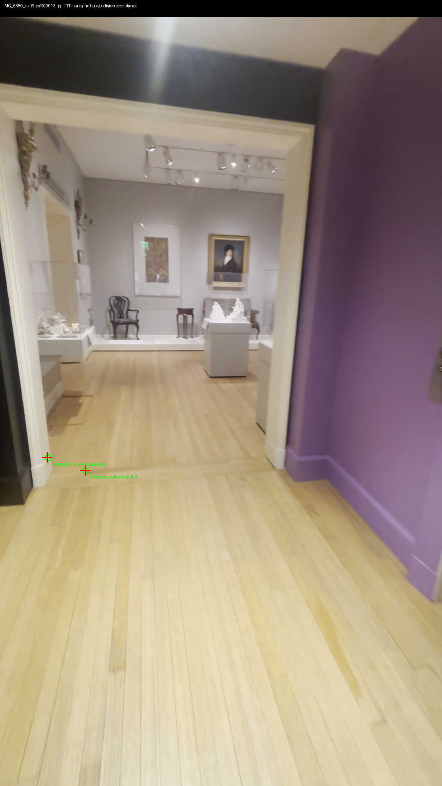
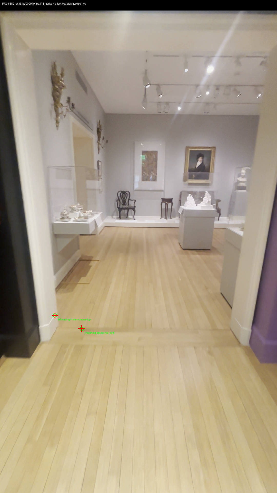
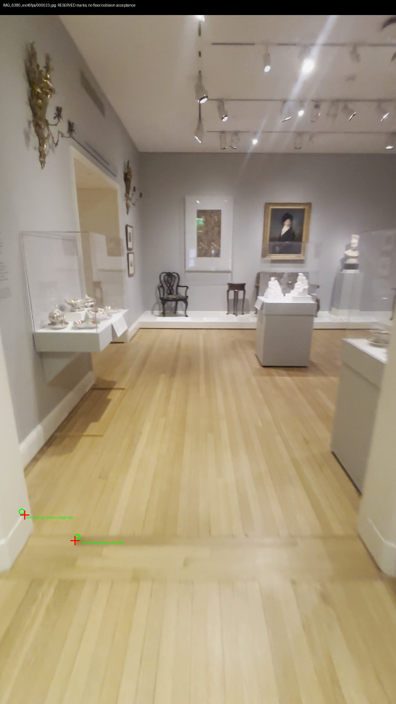
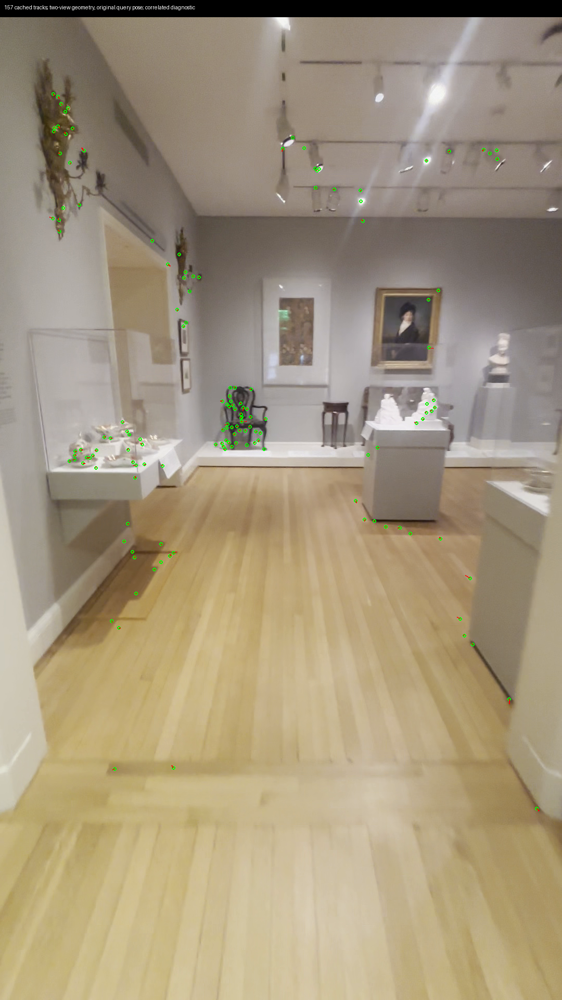
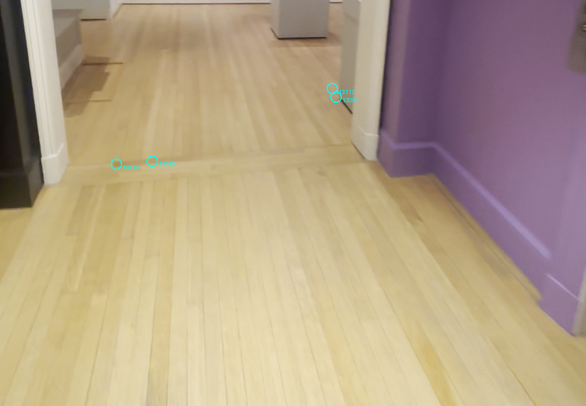
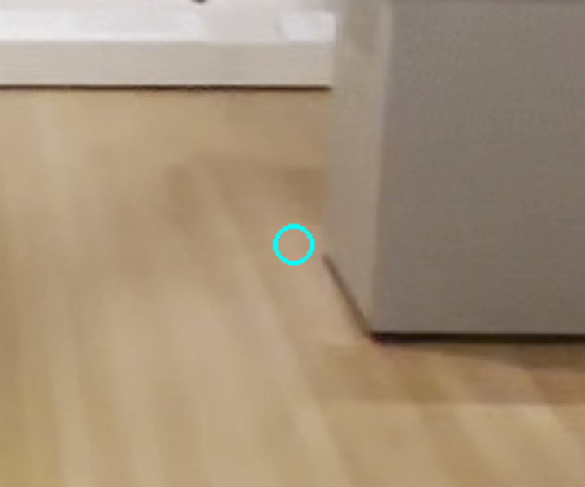
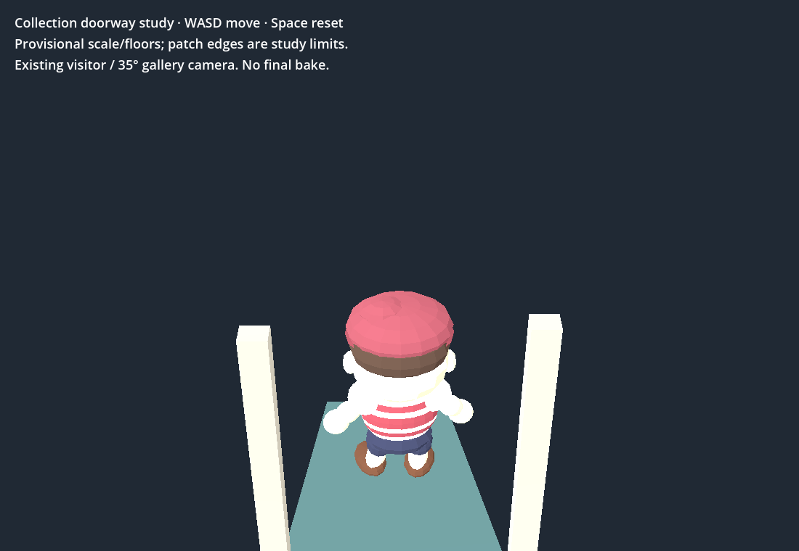
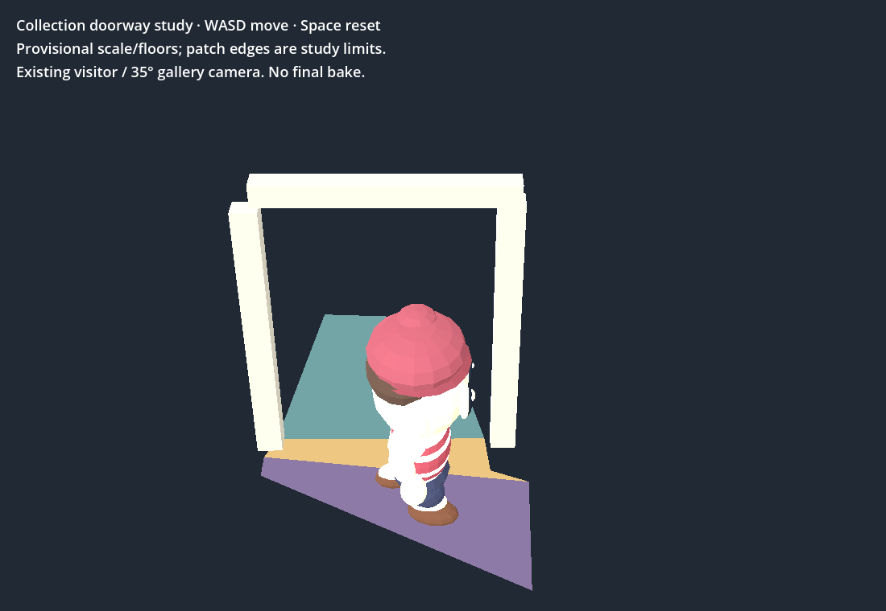

New threshold/casing marks fail at 8.274/8.414px. Frozen failed picks retained. 157 cached tracks stay below 8px; alternate pose does not rescue the manual marks. No new floor, scale or collision accepted.
Play existing bounded doorway study — WASD, Space reset. It uses historical provisional surfaces, not the corrected model. Not the full museum map.








Repository/diff and bounded walk checks pass. Shell retains four previous failures. 3D Viewer preserved. $0 spent.
result.json · track-audit-depth-checked.json · surface-review.json · browser-result.json · shell-verify.json · provenance.json